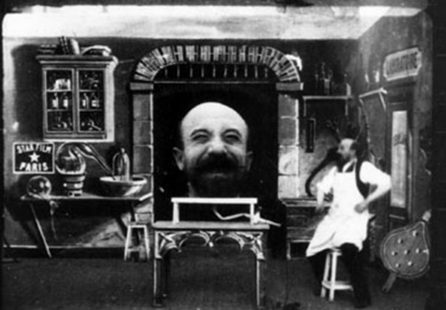
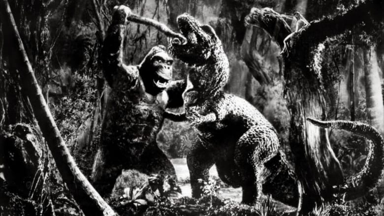
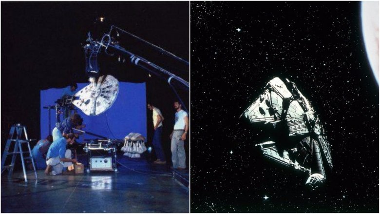
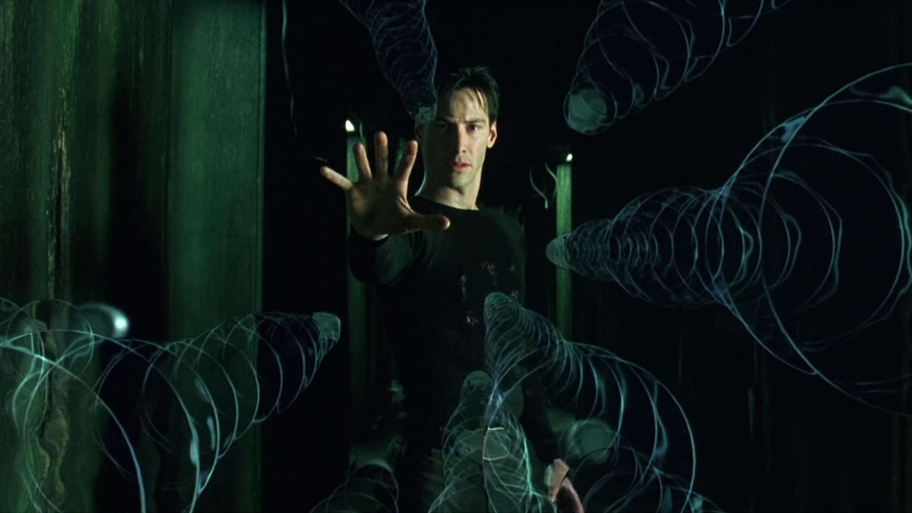
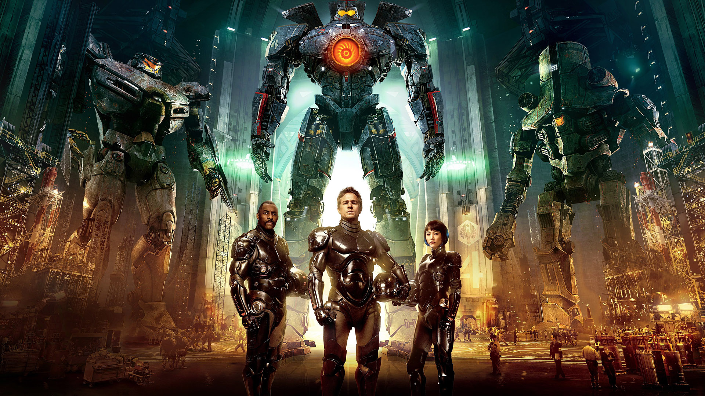

Intro
Star wars, Back to the Future, Transformers, The Lord of the rings, Avatar, Avengers…have you ever wondered how those movies were made ? What kind of technology did they use to create these amazing visuals ? Just look at the picture of the banshee on top and tell me you don’t even want to know how they created that. At the very beginning visual effects were mainly practical. Back in the day people had to be very creative to be able to create some optical illusions. But with time, as in many fields, everything has become digital. CGI, 3d, the composition of images, green screens, etc... all these elements are now part of the technology used for the creation of masterpieces. And yet...it all remains vague. So let me give you some explanations....

It all started with The Man with the Rubber Head, also known as “L’homme à la tête en caoutchouc, which is a 1901 French short silent film by Georges Méliès. The film stars Méliès himself as an apothecary who blows a copy of his own head up to enormous dimensions, but who is unable to get his assistant to perform the stunt as expertly. Méliès appears in the film as the apothecary and as his duplicate head. To create the illusion of the expanding head, Méliès surrounded himself with a black background and used a specially built ramp to move himself gradually closer to the stationary camera. The head was then overlayed onto the rest of the image using the multiple exposure technique. Back in those days, things were different; creativity was the only tool and yet the first visual effect was created.
King Kong, an amazing movie...the very first one came out in 1933. It was a huge challenge to create such a movie. A century ago, people couldn't even picture the idea of "a movie" so creating artistic visuals was surely a big leap of faith to take. Movies back in the day were black and white and there wasn't even any sound and yet our forefathers managed to bring King Kong to life. On a technical point; King Kong was simply a puppet that technicans or artists used. They made it move and sort of animated it practically. But to create the effect, they recorded the animation of king kong (in a way that the puppet would actually look gigantic) and overlayed it on and other footage that they had previously recorded. There also was an island named "skull island" in the movie. To make that they used a technique that we still use nowadays which is called matte painting. The idea is to have artists paint a beautiful and detailled painting of an environnement. You can then overlay you footage over this painting and record it one more time. You then have the feeling that your actors are actually in a certain place when in fact the aren't.


The most famous franchise ever, outstanding visuals, incredible music scoring, best scenario ever and an undefeated legacy...ladies and gentlemen : Star Wars. "A new hope" the first movie came out in 1977. It isn't an understatement to say that George Lucas change the game of visual effects completely. Though most of the effects were still practical, they started to use computers to create sci-fi designs. And god know the amount of creativity that this movie required. Besides the franchise itself had blown away a lot of people...so needles to say that VFX fans owe a lot to Star Wars.
Jurassik Park...what can I say one of my favourite movies visually. Now you could think that CGI started mainly in the 2000's but you would be wrong. When this movie came out, that's when CGI truely made it's appearence. Spielberg used modern days techniques to create this movie. He just did it with theirs means at the time. So If you don't mind, I would like actually explain what those techniques are : They consist on 3d modelling a dinosaur on a computer, applying textures (either generated or directly from pictures) animating this model with keyframes and a virtual armature, creating a 3d environement and rendering all of it. Overlaying, using green screens, etc...Now they did use a lot of animatronics and miniatures though. But this just shows you what the perfect mixture with pratical and visual effects looks like.
A new century | A new level

At the end of the 20th century and the beginning of the 21st, people we're just getting started with this new technology. They didin't know how powerful it was yet. They were mainly experimenting to iunderstand the full potential of VFX. If you think about it, there are a lot of sci-fi movies that came out in the early 2000s, but no one really talks about them because of how bad they were. Those movies were mainly to train and work on this technology. Or at least this is what I think. Anyway, on this picture you see or friend Neo (Keanu Reeves) stoping bullets. This is the time where art and technique started to merge magnificiently.

From the year 2005 to 2015 most of the techniques used, were similar to those from Jurassik Park but with far more powerful softwares and machines. If you look at this poster from Pacific Rim (2013), those war robots in the background (jaegers) were created with a software called autodesk Maya (first version came out in 1998). To sumarize the goal of Vfx at this time was to create movies with the knowledge of what we could do with computers.
Nowadays, saying that technoloy improves at the speed of light, would not even be an overstatement for me. Because it is true no matter what field you choose, when there is technology, there's innovation. We are using incredebly powerful softwares and computers to create realistic imagery. So realistic that it can be somtimes scary to some of us but to be honest,...to me, it's just breathtaking. In the futur the use of realtime rendering technology will be increasing greatly. With those new machines, softwares and technologies, I just can't wait to see how amazing the upcomming movies will be=)=)=). By the way if you're not freaked out yet, just tell yourself that this image of the remake of the lion king is completetly CGI, none of what you are seeing is true...It was all created by incredible artists and masterminds who had very powerful tools......